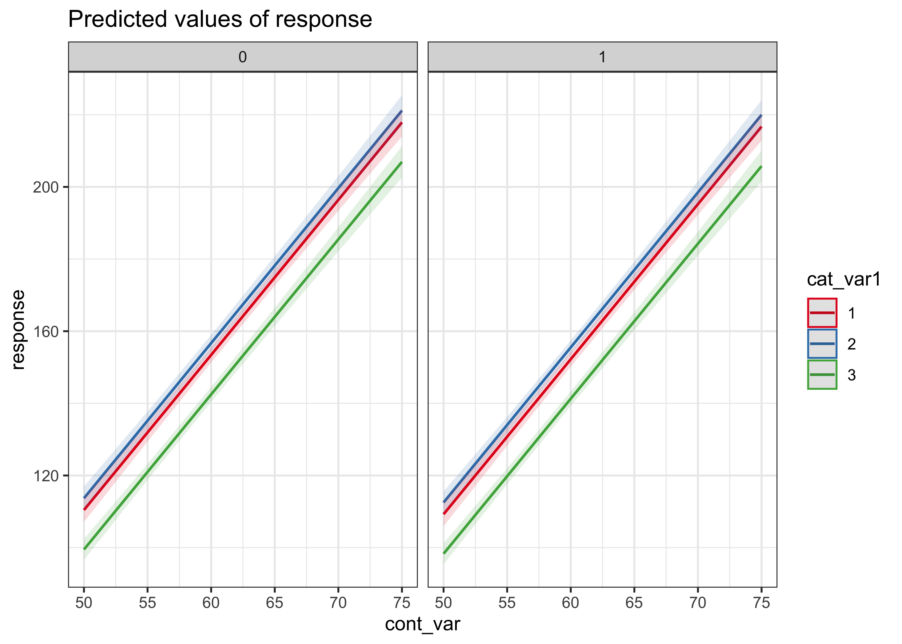
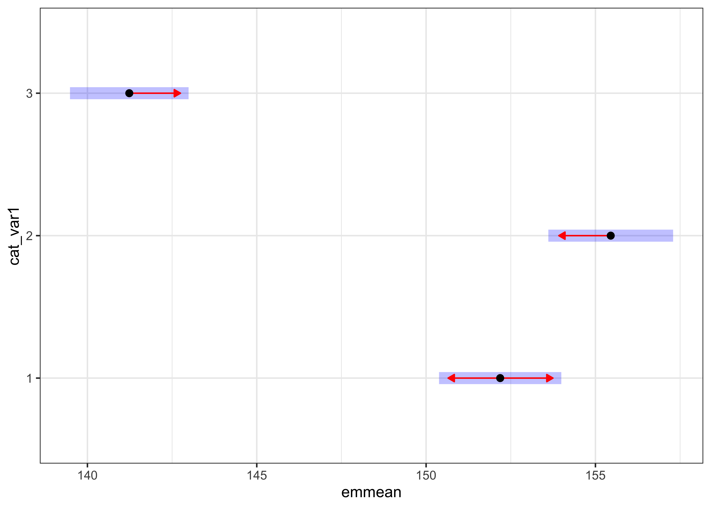
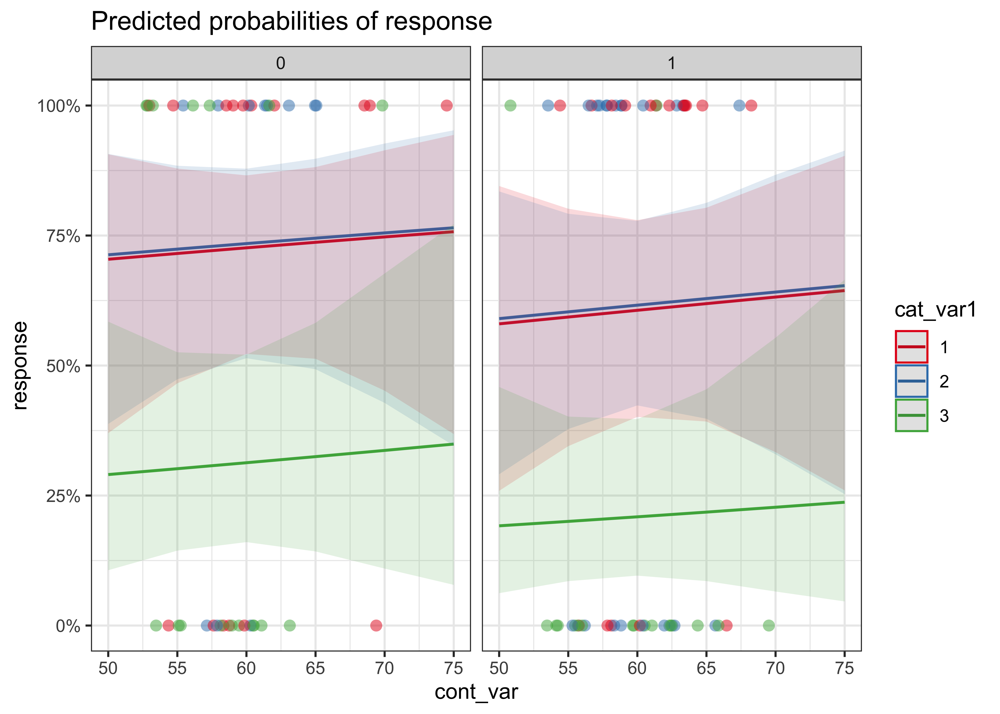
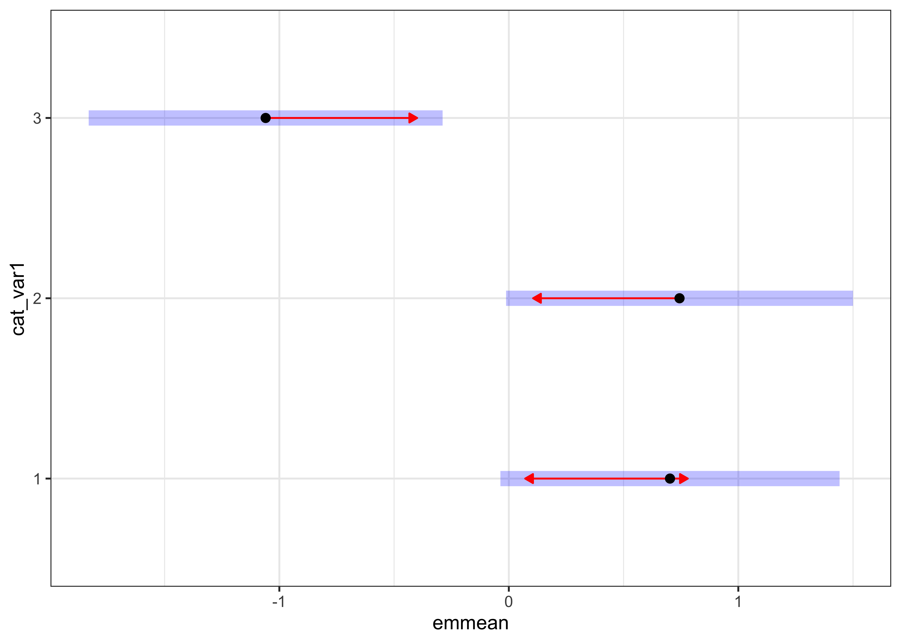
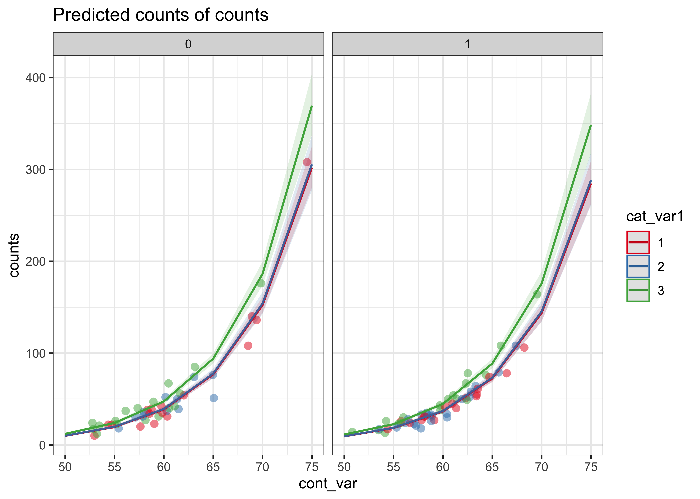
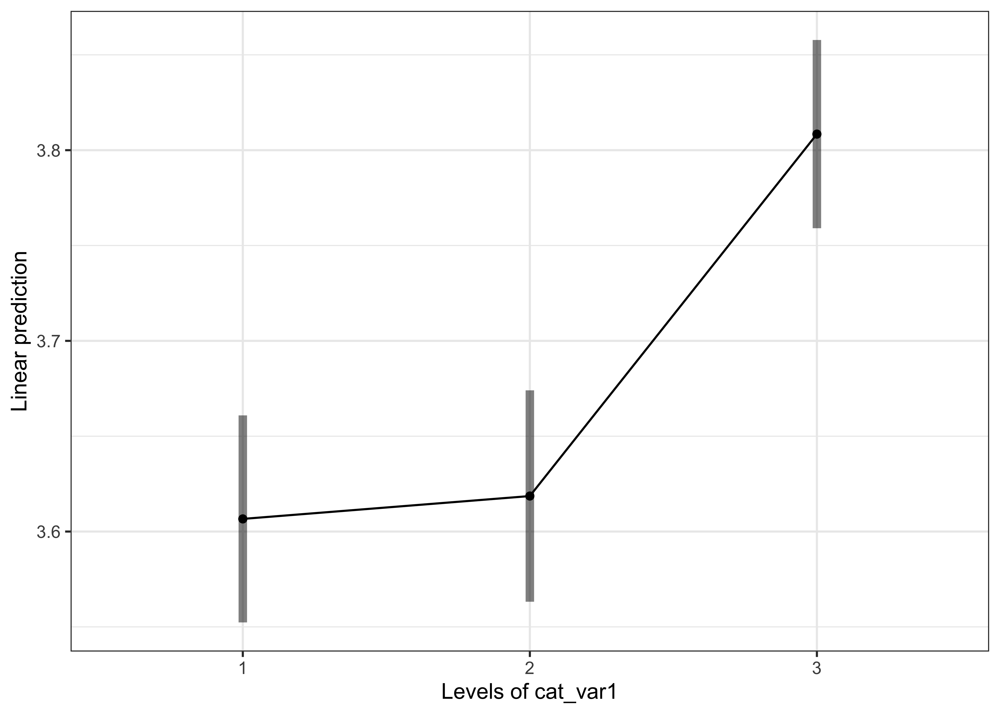

コードを表示
# パッケージの読み込み
pacman::p_load(tidyverse, gt, psych, performance, emmeans, lmerTest, DHARMa, sjPlot, effectsize, car, compute.es, pwr, brunnermunzel, MASS, mgcv)
# テーマと乱数種の設定
theme_set(theme_bw())
set.seed(123)線形回帰分析（lm）は誤差が正規分布に従うことを前提にしています。しかし現実のデータは、2値（正解/不正解）、頻度（0,1,2,…）、歪みの大きい正の連続値など、正規分布から外れることが少なくありません。一般化線形モデル（GLM; glm）は、リンク関数と分布族（誤差分布）を指定して、これらを統一的に扱います。さらに、一般化加法モデル（GAM; mgcv::gam）は、説明変数ごとに平滑関数を用いて非線形を柔軟にモデリングできます。
代表的な分布とリンク関数（既定）：
| 分布 (family) | \(g(\mu)\) | Rでの指定 |
|---|---|---|
| 正規 (gaussian) | \(\mu\) | family = gaussian(link = "identity") |
| 二項 (binomial) | \(\log\frac{\mu}{1-\mu}\) | family = binomial(link = "logit") |
| ポアソン (poisson) | \(\log(\mu)\) | family = poisson(link = "log") |
| ガンマ (Gamma) | \(1/\mu\) | family = Gamma(link = "inverse") |
| 逆正規 (Inverse.gaussian) | \(1/\mu^2\) | family = inverse.gaussian(link = "1/mu^2") |
GLMの理論メモ（重要ポイント） - 正準リンク（canonical link）：各分布に「数式的に扱いやすい既定リンク」があります（例：二項→logit、ポアソン→log）。正準リンクは推定・漸近特性に利点がある一方、実務上は解釈の容易さで他のリンクを選ぶこともあります。
- 分散関数と分散パラメータ：\(\mathrm{Var}(Y)=\phi\,V(\mu)\)。二項・ポアソンの\(\phi\)（分散パラメータ）は既定で1。過分散がある場合はquasibinomialやquasipoisson、あるいは別分布（負の二項など）を検討します。
- 逸脱度（Deviance）：飽和モデルとの対数尤度差に基づく当てはまりの指標。AICは\(-2\log L + 2k\)。GAMでは平滑化パラメータも複雑さとして考慮されます。
- 係数の解釈：リンク関数の世界で線形和を作り、リンクの逆関数で平均\(\mu\)に戻して解釈します（例：ロジット→オッズ比、ポアソン→IRR）。
glm(formula, family, data)で、formulaはlmと同様にy ~ x1 + x2形式です。違いはfamilyを明示する点です。
# パッケージの読み込み
pacman::p_load(tidyverse, gt, psych, performance, emmeans, lmerTest, DHARMa, sjPlot, effectsize, car, compute.es, pwr, brunnermunzel, MASS, mgcv)
# テーマと乱数種の設定
theme_set(theme_bw())
set.seed(123)平滑化回帰は、近傍点に重みを付けて局所的に回帰する手法（例：loess）で、複雑な曲線関係を柔らかく捉えます。まず、非線形を含むデータを作り、多項式回帰と比べてみます。
x1 <- seq(-10, 10, 0.1)
y1 <- 50 * sin(x1) + x1^2 + 10 * rnorm(length(x1), 0, 1)
plot_data <- tibble(x1 = x1, y1 = y1)
# 多項式回帰（2次/5次/8次）
lm_p2 <- lm(y1 ~ poly(x1, 2))
lm_p5 <- lm(y1 ~ poly(x1, 5))
lm_p8 <- lm(y1 ~ poly(x1, 8))
plot_data <- plot_data |>
mutate(
fit_p2 = fitted(lm_p2),
fit_p5 = fitted(lm_p5),
fit_p8 = fitted(lm_p8))
ggplot(plot_data, aes(x = x1)) +
geom_point(aes(y = y1)) +
geom_line(aes(y = fit_p2, colour = "2次多項式")) +
geom_line(aes(y = fit_p5, colour = "5次多項式")) +
geom_line(aes(y = fit_p8, colour = "8次多項式")) +
labs(y = "y1", title = "多項式によるフィットの比較", colour = "モデルタイプ")多項式次数を上げると当てはまりは改善する一方、外挿や端点の挙動が不安定になりがちです。次に、loess で平滑化回帰を行います。
# 平滑化回帰（loess）
loess_fit <- loess(y1 ~ x1, span = 0.3) # span: 平滑度
summary(loess_fit)Call:
loess(formula = y1 ~ x1, span = 0.3)
Number of Observations: 201
Equivalent Number of Parameters: 9.92
Residual Standard Error: 10.53
Trace of smoother matrix: 10.96 (exact)
Control settings:
span : 0.3
degree : 2
family : gaussian
surface : interpolate cell = 0.2
normalize: TRUE
parametric: FALSE
drop.square: FALSE plot_data$loess <- predict(loess_fit, newdata = data.frame(x1 = x1))
ggplot(plot_data, aes(x = x1)) +
geom_point(aes(y = y1)) +
geom_line(aes(y = loess), linewidth = 0.8) +
labs(y = "y1", title = "平滑化回帰（loess）")summaryの読み方（要点）
- Equivalent Number of Parameters：複雑さの目安（大きいほど複雑）。
- Residual Standard Error：予測と実測のズレ。小さいほど当てはまり良好。
- Trace of smoother matrix：平滑化の強さの指標。
span：平滑度。小さいほど曲線は細かく追従、大きいほどなめらか。degree：局所多項式の次数（通常 1 or 2）。family："gaussian"（既定）/"symmetric"（外れ値にやや頑健）。loessは最尤推定に基づかないため、AICは一般に使いません。外れ値に影響されにくいロバスト回帰（MASS::rlm）と通常の最小二乗法（lm）を、stackloss データで比較します。
data(stackloss)
fit_linear <- lm(stack.loss ~ Air.Flow + Water.Temp + Acid.Conc., data = stackloss)
fit_robust <- rlm(stack.loss ~ Air.Flow + Water.Temp + Acid.Conc., data = stackloss)
tab_model(fit_linear, show.aic = TRUE, show.aicc = TRUE, show.stat = TRUE, show.est = TRUE)| stack.loss | ||||
| Predictors | Estimates | CI | Statistic | p |
| (Intercept) | -39.92 | -65.02 – -14.82 | -3.36 | 0.004 |
| Air Flow | 0.72 | 0.43 – 1.00 | 5.31 | <0.001 |
| Water Temp | 1.30 | 0.52 – 2.07 | 3.52 | 0.003 |
| Acid Conc | -0.15 | -0.48 – 0.18 | -0.97 | 0.344 |
| Observations | 21 | |||
| R2 / R2 adjusted | 0.914 / 0.898 | |||
| AIC | 114.576 | |||
| AICc | 118.576 | |||
tab_model(fit_robust, show.aic = TRUE, show.aicc = TRUE, show.stat = TRUE, show.est = TRUE)| stack.loss | ||||
| Predictors | Estimates | CI | Statistic | p |
| (Intercept) | -41.03 | -61.72 – -20.33 | -4.18 | 0.001 |
| Air Flow | 0.83 | 0.59 – 1.06 | 7.46 | <0.001 |
| Water Temp | 0.93 | 0.29 – 1.57 | 3.05 | 0.007 |
| Acid Conc | -0.13 | -0.40 – 0.14 | -0.99 | 0.335 |
| Observations | 21 | |||
| AIC | 115.908 | |||
| AICc | 119.908 | |||
plot_models(fit_linear, fit_robust, show.values = TRUE, m.labels = c("Linear Model", "Robust Regression Model")) +
theme_bw()performance::model_performance() で適合度を一括算出します（AIC/AICc/BIC, \(R^2\), RMSE等）。
library(performance)
model_performance(fit_linear)# Indices of model performance
AIC | AICc | BIC | R2 | R2 (adj.) | RMSE | Sigma
---------------------------------------------------------------
114.576 | 118.576 | 119.798 | 0.914 | 0.898 | 2.918 | 3.243model_performance(fit_robust)# Indices of model performance
AIC | AICc | BIC | RMSE | Sigma
-------------------------------------------
115.908 | 119.908 | 121.131 | 3.012 | 3.348注意：
loessは最尤推定の枠組みではないため AIC は一般に定義しません。非線形の柔軟性と情報量規準によるモデル選択の両立には、GAM が便利です。
GAM は \[
y = \alpha + f_1(x_1) + f_2(x_2) + \cdots + \varepsilon
\] のように、各説明変数に平滑関数 \(f_j(\cdot)\) を割り当てる枠組みです。lm や glm は \(f_j(x)=\beta_j x\) という線形の特別な場合と見なせます。R では mgcv::gam() を用い、連続変数を s() で包むのが基本です。
s(x) はスプライン基底の線形結合。EDF（有効自由度）が曲線の複雑さ。k は基底次元。小さすぎるとパターンを捉えきれず、大きすぎると計算負荷↑。method = "REML"（推奨）か"GCV.Cp"で過剰適合を抑制。select = TRUEで不要な平滑の自動縮退（ゼロ効果の罰則）を有効化。gam.check(fit)：残差/QQ/スケール・kの適否（k'検定）concurvity(fit)：曲線同士の依存（多重共線性のGAM版）plot(fit, pages = 1, shade = TRUE, rug = TRUE, residuals = TRUE)：平滑の形状を確認# 例：平滑と診断
# gam_fit <- gam(response ~ cat_var1 + cat_var2 + s(cont_var), data = data, method = "REML", select = TRUE)
# gam.check(gam_fit)
# concurvity(gam_fit)
# plot(gam_fit, pages = 1, shade = TRUE, rug = TRUE, residuals = TRUE)ここでは、連続×カテゴリカルを含むデータを合成し、重回帰（LM）とGAMを比較します。
library(mgcv)
library(emmeans)
library(tidyverse)
library(performance)
library(sjPlot)
theme_set(theme_bw())
set.seed(123)
n <- 100
cat_var1 <- factor(sample(1:3, n, replace = TRUE)) # 3水準
cat_var2 <- factor(sample(0:1, n, replace = TRUE)) # 2水準
cont_var <- rnorm(n, mean = 60, sd = sqrt(20)) # 連続
# 効果の設計
cat_effect <- ifelse(cat_var1 == 1, 1, ifelse(cat_var1 == 2, 2, -1))
cont_effect <- 2 * sin(cont_var / 5) + cont_var^2 / 200
mu <- 60 + 5 * cat_effect + 5 * cont_effect
response <- rnorm(n, mean = mu, sd = 5)
data <- tibble(cat_var1, cat_var2, cont_var, response)
# 可視化
ggplot(data, aes(x = cont_var, y = response, color = cat_var1, shape = cat_var2)) +
geom_point() +
labs(x = "Continuous Variable", y = "Response", title = "Scatter Plot with Categorical Variables")# LM
linear_model <- lm(response ~ cat_var1 + cat_var2 + cont_var, data = data)
# GAM（連続変数を s() で平滑化）
gam_model <- gam(response ~ cat_var1 + cat_var2 + s(cont_var), data = data)
tab_model(linear_model, show.aic = TRUE, show.aicc = TRUE, show.stat = TRUE, show.est = TRUE)| response | ||||
| Predictors | Estimates | CI | Statistic | p |
| (Intercept) | -104.50 | -119.06 – -89.93 | -14.24 | <0.001 |
| cat var1 [2] | 3.26 | 0.69 – 5.84 | 2.52 | 0.014 |
| cat var1 [3] | -10.95 | -13.49 – -8.41 | -8.56 | <0.001 |
| cat var2 [1] | -1.18 | -3.26 – 0.91 | -1.12 | 0.264 |
| cont var | 4.30 | 4.06 – 4.54 | 36.08 | <0.001 |
| Observations | 100 | |||
| R2 / R2 adjusted | 0.945 / 0.942 | |||
| AIC | 619.081 | |||
| AICc | 619.985 | |||
tab_model(gam_model, show.aic = TRUE, show.aicc = TRUE, show.stat = TRUE, show.est = TRUE)| response | ||||
| Predictors | Estimates | CI | Statistic | p |
| (Intercept) | 152.80 | 150.82 – 154.78 | 153.15 | <0.001 |
| cat var1 [2] | 3.74 | 1.33 – 6.15 | 3.08 | 0.003 |
| cat var1 [3] | -11.70 | -14.10 – -9.29 | -9.67 | <0.001 |
| cat var2 [1] | -1.03 | -3.00 – 0.95 | -1.03 | 0.305 |
| Smooth term (cont var) | 186.62 | <0.001 | ||
| Observations | 100 | |||
| R2 | 0.952 | |||
| AIC | 607.243 | |||
| AICc | 611.174 | |||
plot_model(linear_model, type = "pred", terms = c("cont_var", "cat_var1", "cat_var2"))
plot_model(gam_model, type = "pred", terms = c("cont_var", "cat_var1", "cat_var2"))model_performance(linear_model)# Indices of model performance
AIC | AICc | BIC | R2 | R2 (adj.) | RMSE | Sigma
---------------------------------------------------------------
619.081 | 619.985 | 634.712 | 0.945 | 0.942 | 5.035 | 5.166model_performance(gam_model)# Indices of model performance
AIC | AICc | BIC | R2 | RMSE | Sigma
---------------------------------------------------
607.243 | 611.174 | 639.926 | 0.952 | 4.445 | 4.726gam.check(gam_model) concurvity(gam_model) plot(gam_model, pages = 1, shade = TRUE, rug = TRUE, residuals = TRUE)
解釈メモ
- LMは直線、GAMは曲線。s(cont_var)のEDFが大きいほど非線形性が強い。
- 予測/解釈のニーズに応じ、過度なEDFは抑える（method="REML", select=TRUE 等）。
# 3水準以上のカテゴリカルは多重比較が必要
(pw_lm <- emmeans(linear_model, pairwise ~ cat_var1))$emmeans
cat_var1 emmean SE df lower.CL upper.CL
1 152 0.909 95 150 154
2 155 0.928 95 154 157
3 141 0.882 95 139 143
Results are averaged over the levels of: cat_var2
Confidence level used: 0.95
$contrasts
contrast estimate SE df t.ratio p.value
cat_var11 - cat_var12 -3.26 1.30 95 -2.515 0.0359
cat_var11 - cat_var13 10.95 1.28 95 8.558 <.0001
cat_var12 - cat_var13 14.22 1.28 95 11.126 <.0001
Results are averaged over the levels of: cat_var2
P value adjustment: tukey method for comparing a family of 3 estimates (pw_gam <- emmeans(gam_model, pairwise ~ cat_var1))$emmeans
cat_var1 emmean SE df lower.CL upper.CL
1 152 1.22 88.5 149 154
2 156 1.27 88.5 153 158
3 140 1.24 88.5 138 143
Results are averaged over the levels of: cat_var2
Confidence level used: 0.95
$contrasts
contrast estimate SE df t.ratio p.value
cat_var11 - cat_var12 -3.74 1.21 88.5 -3.079 0.0077
cat_var11 - cat_var13 11.70 1.21 88.5 9.669 <.0001
cat_var12 - cat_var13 15.44 1.25 88.5 12.339 <.0001
Results are averaged over the levels of: cat_var2
P value adjustment: tukey method for comparing a family of 3 estimates plot(pw_lm, comparisons = TRUE)
plot(pw_gam, comparisons = TRUE)emmip(linear_model, ~ cat_var1, CIs = TRUE)emmip(gam_model, ~ cat_var1, CIs = TRUE)2値データ（成功/失敗, 正解/不正解）には 二項分布を仮定し、glm(..., family = binomial()) を用います。非線形が疑われる場合は gam(..., family = binomial()) で logit スケール上の平滑化を導入できます。
library(mgcv)
library(emmeans)
library(tidyverse)
library(performance)
library(sjPlot)
theme_set(theme_bw())
set.seed(123)
n <- 100
cat_var1 <- factor(sample(1:3, n, replace = TRUE))
cat_var2 <- factor(sample(0:1, n, replace = TRUE))
cont_var <- rnorm(n, mean = 60, sd = sqrt(20))
cat_effect <- ifelse(cat_var1 == 1, 1, ifelse(cat_var1 == 2, 2, -1))
cont_effect <- sin(cont_var / 10) + cont_var^2 / 400
# ロジット線形予測子 → 確率
logit_p <- 0.5 * cat_effect + 0.05 * cont_effect
logit_p <- logit_p - mean(logit_p) # シフトして平均0付近に
prob <- plogis(logit_p)
response <- rbinom(n, 1, prob)
data <- tibble(cat_var1, cat_var2, cont_var, response)# GLM
logistic_model <- glm(response ~ cat_var1 + cat_var2 + cont_var, family = binomial(), data = data)
summary(logistic_model)
Call:
glm(formula = response ~ cat_var1 + cat_var2 + cont_var, family = binomial(),
data = data)
Coefficients:
Estimate Std. Error z value Pr(>|z|)
(Intercept) 0.32821 3.15322 0.104 0.91710
cat_var12 0.04154 0.53536 0.078 0.93816
cat_var13 -1.76201 0.55097 -3.198 0.00138 **
cat_var21 -0.54481 0.45164 -1.206 0.22771
cont_var 0.01080 0.05132 0.210 0.83328
---
Signif. codes: 0 '***' 0.001 '**' 0.01 '*' 0.05 '.' 0.1 ' ' 1
(Dispersion parameter for binomial family taken to be 1)
Null deviance: 138.47 on 99 degrees of freedom
Residual deviance: 121.57 on 95 degrees of freedom
AIC: 131.57
Number of Fisher Scoring iterations: 4tab_model(logistic_model, show.aic = TRUE, show.aicc = TRUE, show.stat = TRUE, show.est = TRUE)| response | ||||
| Predictors | Odds Ratios | CI | Statistic | p |
| (Intercept) | 1.39 | 0.00 – 711.64 | 0.10 | 0.917 |
| cat var1 [2] | 1.04 | 0.36 – 3.01 | 0.08 | 0.938 |
| cat var1 [3] | 0.17 | 0.06 – 0.49 | -3.20 | 0.001 |
| cat var2 [1] | 0.58 | 0.23 – 1.39 | -1.21 | 0.228 |
| cont var | 1.01 | 0.91 – 1.12 | 0.21 | 0.833 |
| Observations | 100 | |||
| R2 Tjur | 0.161 | |||
| AIC | 131.571 | |||
| AICc | 132.209 | |||
plot_model(logistic_model, type = "pred", terms = c("cont_var", "cat_var1", "cat_var2"), show.data = TRUE)
model_performance(logistic_model)# Indices of model performance
AIC | AICc | BIC | Tjur's R2 | RMSE | Sigma | Log_loss | Score_log
------------------------------------------------------------------------------
131.571 | 132.209 | 144.597 | 0.161 | 0.458 | 1.000 | 0.608 | -40.363
AIC | Score_spherical | PCP
---------------------------------
131.571 | 0.018 | 0.581(pw_logit <- emmeans(logistic_model, pairwise ~ cat_var1))$emmeans
cat_var1 emmean SE df asymp.LCL asymp.UCL
1 0.702 0.377 Inf -0.0367 1.441
2 0.744 0.386 Inf -0.0120 1.500
3 -1.060 0.393 Inf -1.8308 -0.289
Results are averaged over the levels of: cat_var2
Results are given on the logit (not the response) scale.
Confidence level used: 0.95
$contrasts
contrast estimate SE df z.ratio p.value
cat_var11 - cat_var12 -0.0415 0.535 Inf -0.078 0.9967
cat_var11 - cat_var13 1.7620 0.551 Inf 3.198 0.0040
cat_var12 - cat_var13 1.8035 0.554 Inf 3.255 0.0032
Results are averaged over the levels of: cat_var2
Results are given on the log odds ratio (not the response) scale.
P value adjustment: tukey method for comparing a family of 3 estimates plot(pw_logit, comparisons = TRUE)
emmip(logistic_model, ~ cat_var1, CIs = TRUE)# GAM（ロジスティック）
gam_logistic_model <- gam(response ~ cat_var1 + cat_var2 + s(cont_var), family = binomial(), data = data)
summary(gam_logistic_model)
Family: binomial
Link function: logit
Formula:
response ~ cat_var1 + cat_var2 + s(cont_var)
Parametric coefficients:
Estimate Std. Error z value Pr(>|z|)
(Intercept) 1.0574 0.4724 2.239 0.025186 *
cat_var12 0.1784 0.5482 0.325 0.744840
cat_var13 -2.1153 0.5996 -3.528 0.000419 ***
cat_var21 -0.5498 0.4743 -1.159 0.246371
---
Signif. codes: 0 '***' 0.001 '**' 0.01 '*' 0.05 '.' 0.1 ' ' 1
Approximate significance of smooth terms:
edf Ref.df Chi.sq p-value
s(cont_var) 3.841 4.853 6.499 0.242
R-sq.(adj) = 0.186 Deviance explained = 19.2%
UBRE = 0.27568 Scale est. = 1 n = 100tab_model(gam_logistic_model, show.aic = TRUE, show.aicc = TRUE, show.stat = TRUE, show.est = TRUE)| response | ||||
| Predictors | Odds Ratios | CI | Statistic | p |
| (Intercept) | 2.88 | 1.14 – 7.27 | 2.24 | 0.025 |
| cat var1 [2] | 1.20 | 0.41 – 3.50 | 0.33 | 0.745 |
| cat var1 [3] | 0.12 | 0.04 – 0.39 | -3.53 | <0.001 |
| cat var2 [1] | 0.58 | 0.23 – 1.46 | -1.16 | 0.246 |
| Smooth term (cont var) | 6.50 | 0.242 | ||
| Observations | 100 | |||
| R2 | 0.186 | |||
| AIC | 127.568 | |||
| AICc | 129.089 | |||
plot_model(gam_logistic_model, type = "pred", terms = c("cont_var", "cat_var1", "cat_var2"), show.data = TRUE)model_performance(gam_logistic_model)# Indices of model performance
AIC | AICc | BIC | R2 | RMSE | Sigma | Log_loss | Score_log
--------------------------------------------------------------------------
127.568 | 129.089 | 147.994 | 0.186 | 0.435 | 1.000 | 0.559 | -42.564
AIC | Score_spherical | PCP
---------------------------------
127.568 | 0.028 | 0.614(pw_gam_logit <- emmeans(gam_logistic_model, pairwise ~ cat_var1))$emmeans
cat_var1 emmean SE df lower.CL upper.CL
1 0.387 0.461 92.2 -0.529 1.303
2 0.565 0.465 92.2 -0.358 1.488
3 -1.728 0.556 92.2 -2.833 -0.623
Results are averaged over the levels of: cat_var2
Results are given on the logit (not the response) scale.
Confidence level used: 0.95
$contrasts
contrast estimate SE df t.ratio p.value
cat_var11 - cat_var12 -0.178 0.548 92.2 -0.325 0.9433
cat_var11 - cat_var13 2.115 0.600 92.2 3.528 0.0019
cat_var12 - cat_var13 2.294 0.619 92.2 3.707 0.0010
Results are averaged over the levels of: cat_var2
Results are given on the log odds ratio (not the response) scale.
P value adjustment: tukey method for comparing a family of 3 estimates plot(pw_gam_logit, comparisons = TRUE)emmip(gam_logistic_model, ~ cat_var1, CIs = TRUE)performance::performance_roc(logistic_model)AUC: 71.19%performance::performance_roc(gam_logistic_model)AUC: 76.44%check_model(logistic_model) # ロジスティックの診断（残差/QQ/影響点）check_model(gam_logistic_model)出力のオッズ比は係数の指数変換です。95%CIに 1 を含むかどうかが差の判定の目安になります。
頻度データには ポアソン回帰を使います（glm(..., family = poisson())）。平均と分散が等しい仮定に反する場合は過分散に注意し、負の二項（MASS::glm.nb）や準ポアソンを検討します。非線形は gam(..., family = poisson()) で扱えます。
set.seed(123)
n <- 100
cat_var1 <- factor(sample(1:3, n, replace = TRUE))
cat_var2 <- factor(sample(0:1, n, replace = TRUE))
cont_var <- rnorm(n, mean = 60, sd = sqrt(20))
nonlinear_effect <- 0.1 * sin(cont_var / 10) + 0.001 * cont_var^2
lambda <- exp(0.1 * as.numeric(cat_var1) - 0.05 * as.numeric(cat_var2) + nonlinear_effect)
counts <- rpois(n, lambda)
data <- tibble(cat_var1, cat_var2, cont_var, counts)# GLM
poisson_model <- glm(counts ~ cat_var1 + cat_var2 + cont_var, family = poisson(), data = data)
summary(poisson_model)
Call:
glm(formula = counts ~ cat_var1 + cat_var2 + cont_var, family = poisson(),
data = data)
Coefficients:
Estimate Std. Error z value Pr(>|z|)
(Intercept) -4.559517 0.192249 -23.717 < 2e-16 ***
cat_var12 0.011995 0.037872 0.317 0.7514
cat_var13 0.201803 0.034815 5.796 6.77e-09 ***
cat_var21 -0.058325 0.029324 -1.989 0.0467 *
cont_var 0.136931 0.002901 47.205 < 2e-16 ***
---
Signif. codes: 0 '***' 0.001 '**' 0.01 '*' 0.05 '.' 0.1 ' ' 1
(Dispersion parameter for poisson family taken to be 1)
Null deviance: 2354.58 on 99 degrees of freedom
Residual deviance: 108.67 on 95 degrees of freedom
AIC: 669.67
Number of Fisher Scoring iterations: 4tab_model(poisson_model, show.aic = TRUE, show.aicc = TRUE, show.stat = TRUE, show.est = TRUE)| counts | ||||
| Predictors | Incidence Rate Ratios | CI | Statistic | p |
| (Intercept) | 0.01 | 0.01 – 0.02 | -23.72 | <0.001 |
| cat var1 [2] | 1.01 | 0.94 – 1.09 | 0.32 | 0.751 |
| cat var1 [3] | 1.22 | 1.14 – 1.31 | 5.80 | <0.001 |
| cat var2 [1] | 0.94 | 0.89 – 1.00 | -1.99 | 0.047 |
| cont var | 1.15 | 1.14 – 1.15 | 47.20 | <0.001 |
| Observations | 100 | |||
| R2 Nagelkerke | 1.000 | |||
| AIC | 669.674 | |||
| AICc | 670.312 | |||
plot_model(poisson_model, type = "pred", terms = c("cont_var", "cat_var1", "cat_var2"), show.data = TRUE)
model_performance(poisson_model)# Indices of model performance
AIC | AICc | BIC | Nagelkerke's R2 | RMSE | Sigma | Score_log | Score_spherical
-------------------------------------------------------------------------------------------
669.674 | 670.312 | 682.700 | 1.000 | 7.444 | 1.000 | -3.298 | 0.089(pw_pois <- emmeans(poisson_model, pairwise ~ cat_var1))$emmeans
cat_var1 emmean SE df asymp.LCL asymp.UCL
1 3.61 0.0277 Inf 3.55 3.66
2 3.62 0.0283 Inf 3.56 3.67
3 3.81 0.0252 Inf 3.76 3.86
Results are averaged over the levels of: cat_var2
Results are given on the log (not the response) scale.
Confidence level used: 0.95
$contrasts
contrast estimate SE df z.ratio p.value
cat_var11 - cat_var12 -0.012 0.0379 Inf -0.317 0.9462
cat_var11 - cat_var13 -0.202 0.0348 Inf -5.796 <.0001
cat_var12 - cat_var13 -0.190 0.0369 Inf -5.144 <.0001
Results are averaged over the levels of: cat_var2
Results are given on the log (not the response) scale.
P value adjustment: tukey method for comparing a family of 3 estimates plot(pw_pois, comparisons = TRUE)emmip(poisson_model, ~ cat_var1, CIs = TRUE)
# GAM
gam_poisson_model <- gam(counts ~ cat_var1 + cat_var2 + s(cont_var), family = poisson(), data = data)
summary(gam_poisson_model)
Family: poisson
Link function: log
Formula:
counts ~ cat_var1 + cat_var2 + s(cont_var)
Parametric coefficients:
Estimate Std. Error z value Pr(>|z|)
(Intercept) 3.63110 0.03158 114.993 < 2e-16 ***
cat_var12 0.01843 0.03834 0.481 0.6307
cat_var13 0.20523 0.03499 5.866 4.47e-09 ***
cat_var21 -0.05103 0.02998 -1.702 0.0887 .
---
Signif. codes: 0 '***' 0.001 '**' 0.01 '*' 0.05 '.' 0.1 ' ' 1
Approximate significance of smooth terms:
edf Ref.df Chi.sq p-value
s(cont_var) 1.815 2.3 2253 <2e-16 ***
---
Signif. codes: 0 '***' 0.001 '**' 0.01 '*' 0.05 '.' 0.1 ' ' 1
R-sq.(adj) = 0.968 Deviance explained = 95.5%
UBRE = 0.17774 Scale est. = 1 n = 100tab_model(gam_poisson_model, show.aic = TRUE, show.aicc = TRUE, show.stat = TRUE, show.est = TRUE)| counts | ||||
| Predictors | Incidence Rate Ratios | CI | Statistic | p |
| (Intercept) | 37.75 | 35.49 – 40.16 | 114.99 | <0.001 |
| cat var1 [2] | 1.02 | 0.94 – 1.10 | 0.48 | 0.631 |
| cat var1 [3] | 1.23 | 1.15 – 1.31 | 5.87 | <0.001 |
| cat var2 [1] | 0.95 | 0.90 – 1.01 | -1.70 | 0.089 |
| Smooth term (cont var) | 2253.19 | <0.001 | ||
| Observations | 100 | |||
| R2 | 0.968 | |||
| AIC | 668.781 | |||
| AICc | 669.632 | |||
plot_model(gam_poisson_model, type = "pred", terms = c("cont_var", "cat_var1", "cat_var2"), show.data = TRUE)model_performance(gam_poisson_model)# Indices of model performance
AIC | AICc | BIC | R2 | RMSE | Sigma | Score_log | Score_spherical
---------------------------------------------------------------------------------
668.781 | 669.632 | 683.931 | 0.968 | 7.106 | 1.000 | -3.286 | 0.089(pw_gam_pois <- emmeans(gam_poisson_model, pairwise ~ cat_var1))$emmeans
cat_var1 emmean SE df lower.CL upper.CL
1 3.60 0.0292 94.2 3.54 3.66
2 3.62 0.0289 94.2 3.56 3.68
3 3.81 0.0266 94.2 3.75 3.86
Results are averaged over the levels of: cat_var2
Results are given on the log (not the response) scale.
Confidence level used: 0.95
$contrasts
contrast estimate SE df t.ratio p.value
cat_var11 - cat_var12 -0.0184 0.0383 94.2 -0.481 0.8806
cat_var11 - cat_var13 -0.2052 0.0350 94.2 -5.866 <.0001
cat_var12 - cat_var13 -0.1868 0.0371 94.2 -5.032 <.0001
Results are averaged over the levels of: cat_var2
Results are given on the log (not the response) scale.
P value adjustment: tukey method for comparing a family of 3 estimates plot(pw_gam_pois, comparisons = TRUE)emmip(gam_poisson_model, ~ cat_var1, CIs = TRUE)performance::check_overdispersion(poisson_model)# Overdispersion test
dispersion ratio = 1.117
Pearson's Chi-Squared = 106.082
p-value = 0.205performance::check_overdispersion(gam_poisson_model)# Overdispersion test
dispersion ratio = 1.090
Pearson's Chi-Squared = 103.594
p-value = 0.257quasipoisson や 負の二項を検討。MASS::glm.nb(counts ~ cat_var1 + cat_var2 + cont_var, data = data)
Call: MASS::glm.nb(formula = counts ~ cat_var1 + cat_var2 + cont_var,
data = data, init.theta = 495.476198, link = log)
Coefficients:
(Intercept) cat_var12 cat_var13 cat_var21 cont_var
-4.52378 0.01331 0.20316 -0.05735 0.13633
Degrees of Freedom: 99 Total (i.e. Null); 95 Residual
Null Deviance: 2072
Residual Deviance: 98.96 AIC: 671.1同じ「時間・人数・面積」あたりの発生率を比較するには、offset(log(exposure))を使います。
set.seed(1)
data$exposure <- runif(nrow(data), min = 0.5, max = 2) # 例：観測時間（時間）
glm(counts ~ cat_var1 + cat_var2 + cont_var + offset(log(exposure)),
family = poisson(), data = data) |> tab_model()| counts | |||
| Predictors | Incidence Rate Ratios | CI | p |
| (Intercept) | 0.01 | 0.00 – 0.01 | <0.001 |
| cat var1 [2] | 1.05 | 0.97 – 1.13 | 0.231 |
| cat var1 [3] | 1.44 | 1.34 – 1.55 | <0.001 |
| cat var2 [1] | 1.06 | 1.00 – 1.12 | 0.065 |
| cont var | 1.15 | 1.15 – 1.16 | <0.001 |
| Observations | 100 | ||
| R2 Nagelkerke | 1.000 | ||
tab_model()の IRR（Incidence Rate Ratio） は係数の指数変換。95%CIが 1 を跨ぐと差がない可能性を示唆します。
glm の family を変えることで、さまざまな目的変数に対応できます。代表例：
| 回帰 | 目的変数 | Rの関数 | 備考 |
|---|---|---|---|
| ベータ回帰 | 0–1 の比率 | betareg::betareg() |
link = "probit" でプロビット可 |
| ガンマ回帰 | 正の連続 | glm(family = Gamma()) |
既定リンクは inverse |
| 負の二項回帰 | 過分散カウント | MASS::glm.nb() |
GLMM は lme4::glmer.nb() |
| ゼロ切断 | 0 を含まないカウント | VGAM::vglm(family = pospoisson) |
Poisson/NegBin 両系統あり |
| ゼロ過剰 | 0 が過多のカウント | pscl::zeroinfl() |
Poisson/NegBin 両系統あり |
| 多値ロジスティック | 名義多水準 | nnet::multinom() |
mgcv にも multinom（名称衝突注意） |
| 順序ロジスティック | 順序カテゴリ | MASS::polr(), ordinal::clm() |
VGAM::vglm(family = acat()) は隣接法 |
実務ヒント - ゼロ過剰：発生メカニズムが「発生する/しない」と「何回起きる」の二段階であるときに有効。
- 準二項/準ポアソン：分散推定を自由化（\(\phi\)推定）して標準誤差を補正。係数自体は（家族を変えない限り）同じでも有意性が変わることがある。
- リンク選択：解釈（オッズ比/IRR）・安定性・予測精度の三点で評価。
プロビットはロジットに近い結果を返します（係数は概ねロジット係数/1.7）。選択は好みと解釈の便宜によります。